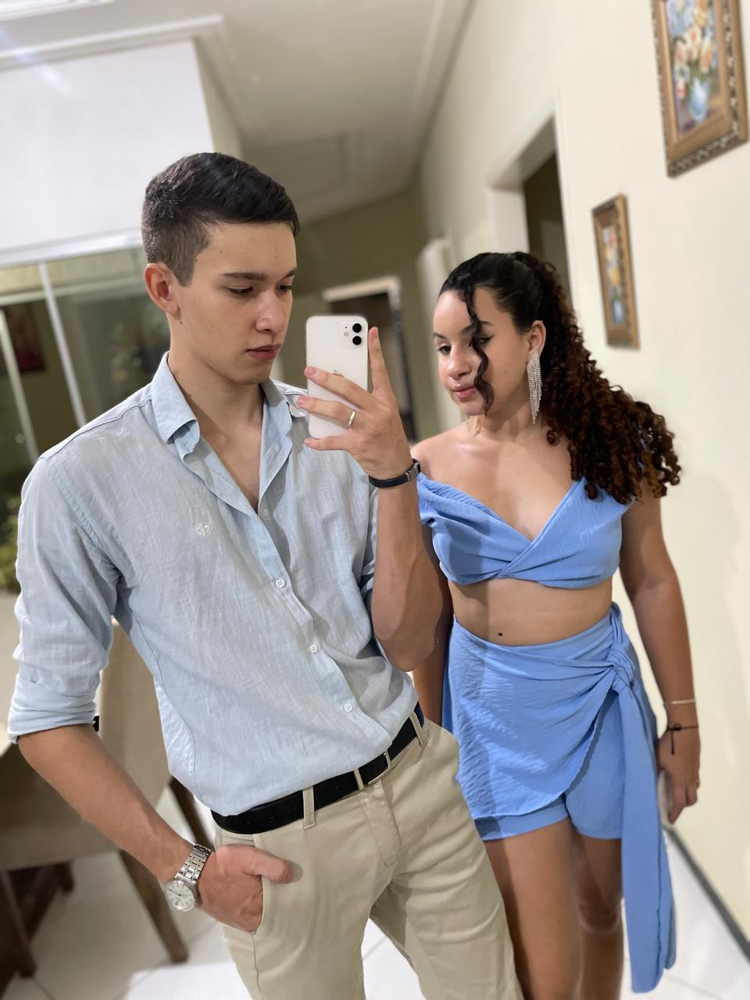

AVISO: ESTE WEB-SITE NÃO FOI OTIMIZADO PARA DESKTOP!
O começo de tudo!
10 de março de 2023
Esse foi a primeira vez que saimos juntos, foi divertido kkkk
Recorrência
14 de abril de 2023
Aqui nós já tinhamos ficado, e eu estava começando a ir te ver sempre...
Holofotes
16 de abril de 2023
Nós começamos a sair juntos, nos ver sempre, estava se tornando mais sério
Emoções
24 de abril de 2023
Em meio a nossas conversas, brigas, brincadeiras, comecei a sentir outra emoção...
Sorvetes e doces
29 de abril de 2023
A primeira vez que saimos a sós para tomar um sorvete, já estavamos bem proximos, mais ligados, e mais conhecidos para nós mesmos
Álcool e música
5 de maio a 7 de maio de 2023

Essa foi a primeira festa que fomos como um "casal", ainda não namoravamos, mas fomos juntos todos os dias, dias incríveis...
Neste momento da história já estavamos vivendo como um casal, sempre nos viamos, existia ciúmes cobrança e tudo que existe em uma relação, exceto o pedido...
Vinho e MPB
13 de maio de 2023
Eu amava olhar no seu rosto enquanto bebiamos e ver você reclamar do vinho seco, chama-lo de amargo, de ruim, era engraçado, nós ouviamos músicas que você detestava e só continuava ouvindo porque aquele momento era bom, você sempre reclamava: "Isso é música de velho", era incrível estar ali com você!
A partir daqui eu já tinha te pedido em namoro, e nós estavamos oficialmente namorando!
O pedido foi feito no dia 15 de maio de 2023.
Cartas
4 de junho de 2023
Fomos juntos na casa de Rauã pela primeira vez, jogar uno... você não sabe perder kkkkk
Ansiedade Pré Surpresa
9 de junho de 2023
Faltava 3 dias para o "dia dos namorados", você não aguentava mais esconder sua surpresa e começou a me dar dicas para que eu tentasse acertar oque era... para o seu azar (ou sorte), eu acertei, e você me fez ir com você até sua casa de madrugada para você me entregar o presente, você não é a melhor pessoa para esconder uma surpresa kkkkk
Enfim dia dos namorados!
Valentine's Day
12 de junho de 2023
Eu estava muito ansioso, essa era a primeira vez que comemoraria o dia dos namorados, preparei um jantar muito especial para você, estava com medo de que não gostasse, mas que bom que deu tudo certo...
Arraiá
18 de junho de 2023
Eu sei que desse dia tem muita história para contar, mas prefiro ficar só na mémoria kkkkk
Polo branca
19 de junho de 2023
Esse foi apenas mais um dos tantos dias em que conversavamos, assistiamos, cozinhavamos (eu cozinhava)... e por um acaso, acabamos tirando uma das fotos que mais amo!
Aleatório?
1 de julho de 2023
Não teria muito oque falar desse dia, era só mais uma festa como tantas outras... mas de uma forma completamente estranha e aleatória você e sua amiga encontraram dois estrangeiros, que sinceramente não lembro de onde eram kkkk, o mais impressionante é que ele ainda conversou com vocês e tirou uma foto kkkkk
Meu Aniversário
14 de julho de 2023
Esse foi um dia incrível para mim, a jaqueta que estava usando na festa, foi a que você me deu na véspera do meu aniversário, nunca vou esquecer de todas as risadas daquele dia, obrigado por estar comigo!
Seu Aniversário
23 de julho de 2023
Eu conheci seu pai né... estava bastante nervoso kkkk, esse dia foi incrível, bom exceto quando me jogaram na piscina kkkk, eu te vi muito feliz nesse dia, você estava com seus olhinhos brilhando, agradeço por ter feito parte disso!
Pool Party
6 de agosto de 2023
Oque falar sobre esse dia? jogamos altinha (você não acertou uma...), tomamos banho de piscina, ouvimos música... memórias que não se apagam!
Boas risadas
15 de agosto de 2023
Você lembra do show de Zezo? quanta risada nós demos, o quanto aproveitamos... aquele dia ficou marcado pra sempre kkkkk
Happy mom
24 de agosto de 2023

Eu amei esse dia, ver você se aproximar da minha mãe, e da minha familia foi algo lindo de se ver, ver a minha mãe feliz por te ter ali, ver você se dar bem com todo mundo... perfeito, apenas oque tenho a dizer
Quer saber qual um dos dias mais importantes para mim?
Shine
17 de setembro de 2023

Depois que fiquei no internado e te vi se preocupando, indo e tentando me ver, eu me senti muito especial, e um dos melhores dias para mim foi quando eu estava chateado por tudo que estava acontecendo e te vi entrar e me dar o seu amor e atenção... seus olhos brilhavam para mim e por mais que você odeie essa foto eu a amo!
Ao longo de toda minha recuperação você esteve ao meu lado, e te agradeço muito por isso
Recarregando...
09 de setembro a Hoje
Obrigado por ficar ao meu lado, eu te amo!
Natal
25/12/2023

O natal foi uma data especial por inumeros motivos, por minha recuperação estar indo bem, por te ter ao meu lado, pelas pessoas que comemoraram conosco, não há muito oque falar... o ano inteiro foi uma emoção, surpresas, alegria e tristeza, essa data foi só mais uma das tantas que nos fizeram feliz!
Ano Novo
Como já era de se esperar o fim de mais um ano, dividir com você esse ano foi uma honra, passar cada segundo pensando em você e em nós, sentir que tenho seu amor, atenção e tantas outras coisas, poder te ajudar e ser ajudado quando mais precisei, essa data foi também uma das mais importantes, isso porque foi o ponto final e começo de outro ano com você, EU TE AMO, nunca se esqueça disso!
FELIZ 1 ANO MEU AMOR, ESPERO QUE TENHA GOSTADO DE REVER NOSSAS MEMÓRIAS, FIZ COM MUITO CARINHO PARA VOCÊ!
Sabemos que muitas lembraças boas não estam aqui, e infelizmente não conseguimos trasnforma-las em
fotos, trouxe as que mais gosto e que mais me trouxe felicidade em lembrar, eu te amo para todo sempre.
Ass: K.Reis